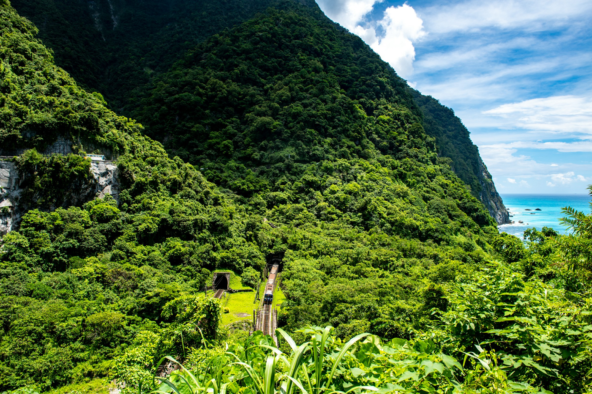
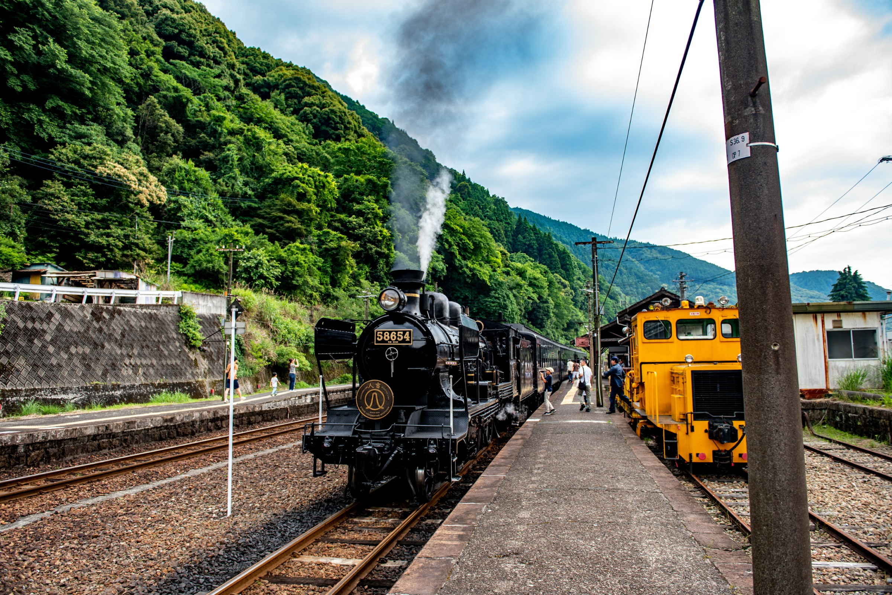
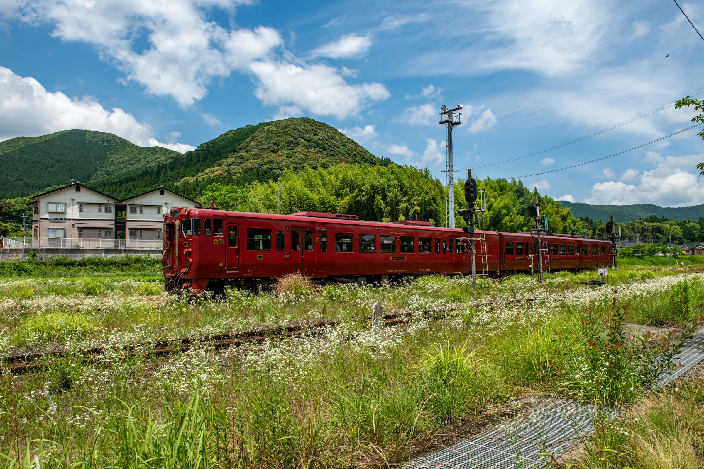
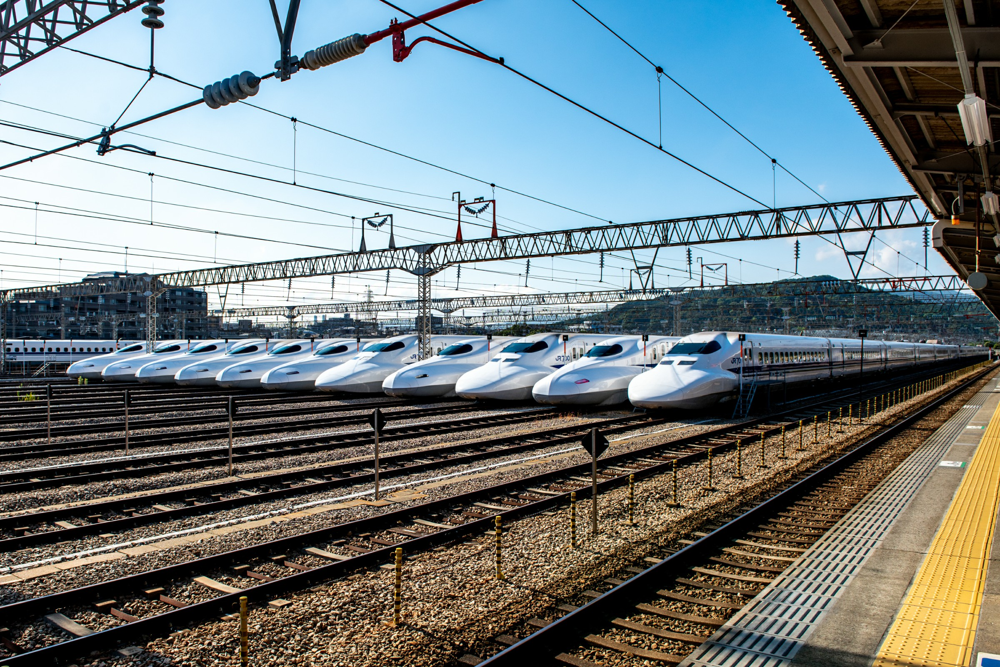
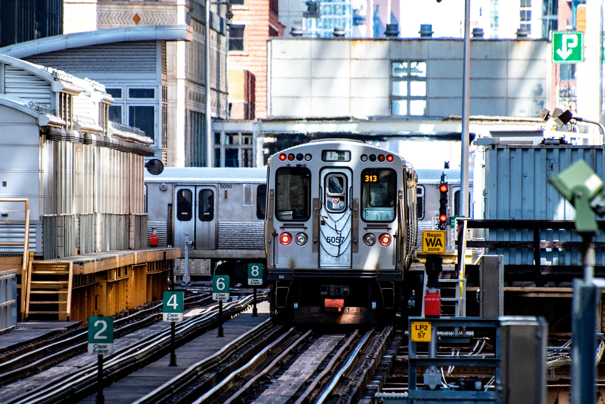
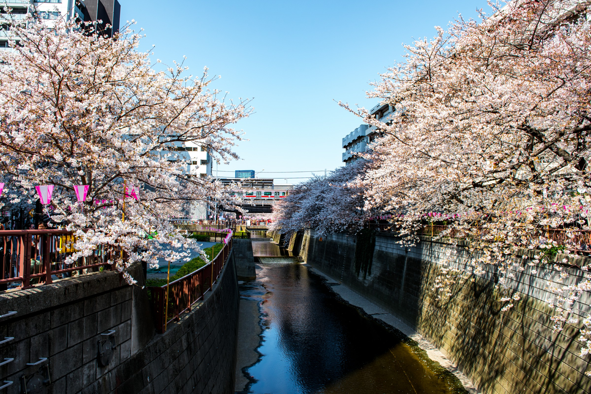
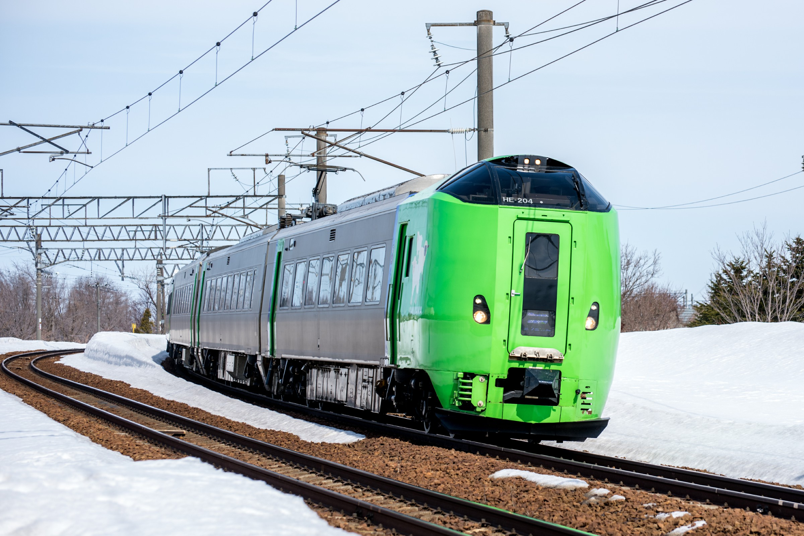
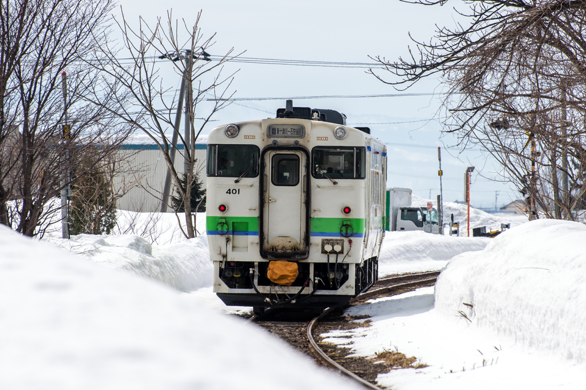
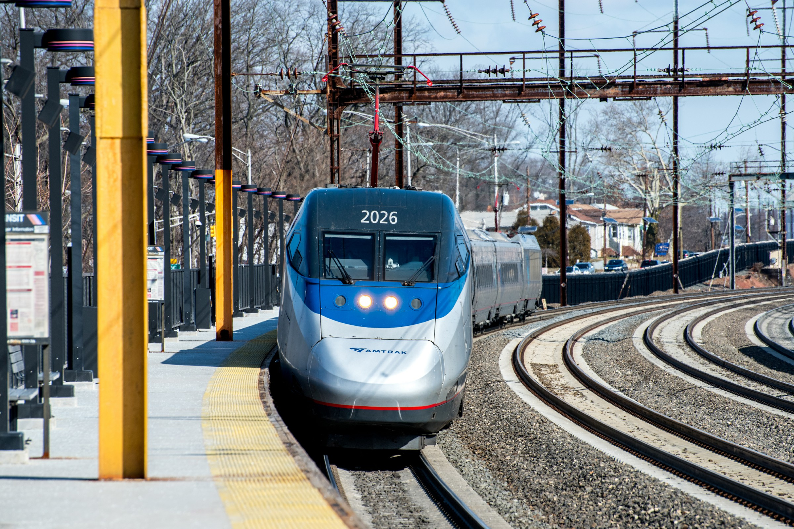

A local train crossing the Taroko mountain
Date: June 8th, 2018
Location: Hualien, Taiwan

The SL (Steam Locomotive) Hitoyoshi, the oldest locomotive still in use in Japan
Date: June 3rd, 2018
Location: Yatsushiro, Kyushu, Japan

The sightseeing train "Isaburou"
Date: June 3rd, 2018
Location: Yoshimatsu, Kyushu, Japan

The base of Shinkansen
Date: June 1st, 2018
Location: Fukuoka, Japan

The famous "Junction 18"
Date: April 19th, 2018
Location: Chicago, USA

Chery blossom in Tokyo
Date: March 25th, 2018
Location: Meguro, Tokyo, Japan

Limited express "Lilac"
Date: March 22nd, 2018
Location: Takigawa, Hokkaido, Japan

The only train remaining in shin-totsukawa.
Date: March 22nd, 2018
Location: Shin-Totsukawa, Hokkaido, Japan
The Jumbo Jet
Date: March 16th, 2018
Location: Chicago O'Hare, USA

The only high speed rail in the US
Date: February 17th, 2018
Location: Metropart, New Jersey, USA